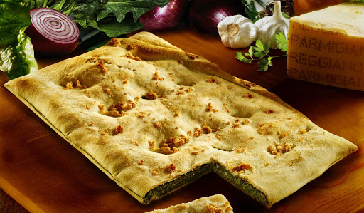

L'ERBAZZONE
ANTIPASTI

- Descrizione
- L'erbazzone in pratica è una torta salata composta da un fondo di pasta, ripieno per due centimetri con un impasto di bietole lesse e insaporite (a volte unite con spinaci lessi), uovo, scalogno, cipolla, aglio e tanto Parmigiano-Reggiano. Viene poi richiuso con un altro strato di pasta cosparso di lardelli o pezzetti di pancetta e punzecchiato con la forchetta.
- Variazioni recenti prevedono l'uso della pasta sfoglia o pasta brisée, e della ricotta vaccina nell'impasto.
- Preparazione
- Preparare l'impasto per la sfoglia dell'erbazzone, mettendo su di una spianatoia la farina a fontana, il burro freddo a pezzetti, il sale e tanta acqua gassata quanta ne serva per ottenere un composto liscio ed elastico (circa un bicchiere); impastare bene gli ingredienti e formate con essi una palla, che si dovrà ricoprire con della pellicola e lasciare riposare in un luogo fresco e asciutto per almeno mezz'ora. Accendere il forno a 180°C. Intanto fare lessare le bietole in acqua salata (o cuocerle al vapore), poi strizzarle e tritarle. Tritare il lardo e metterlo a sciogliere in un tegame a fuoco basso insieme a due cucchiai di olio, poi aggiungere l'aglio (intero) e i cipollotti tritati e far appassire. Togliere poi l'aglio e aggiungere il prezzemolo tritato, le bietole, il sale e il pepe; lasciare insaporire per qualche minuto, poi togliere il tegame dal fuoco e fare intiepidire. Unire in seguito il parmigiano reggiano grattugiato alle bietole e amalgamare bene. Prendere la pasta per la sfoglia e tirarla sottilmente fino a formare due dischi: uno dovrà essere qualche centimetro più largo del diametro della teglia scelta per cuocere l'erbazzone e lo si userà per foderare la tortiera imburrata; i centimetri in più servono per rivestire i bordi della tortiera. L'altro disco servirà per chiudere la preparazione. Posto il disco più grande sul fondo della tortiera, versare il ripieno, livellarlo bene e poi ricoprire con l'altro disco più piccolo. Saldare il bordo della pasta sottostante ripiegando il contorno. Con i rebbi di una forchetta punzecchiare tutta la superficie della sfoglia e poi spennellarla bene con il tuorlo d'uovo. Cuocere in forno già caldo per trenta minuti circa, poi cospargere la superficie dell'erbazzone con la pancetta tagliata a striscioline e continuare la cottura per altri dieci-quindici minuti circa. A cottura avvenuta lasciar intiepidire o raffreddare. Servire l'erbazzone tagliandolo a fette o losanghe.
Torna alla pagina iniziale
by Bartoli Matteo